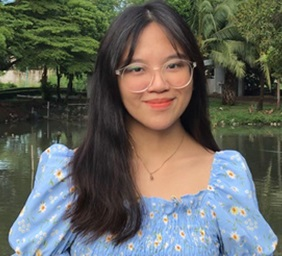

Cindy Gaoat

Summary
Enthusiastic and adaptable Computer Engineering fresh graduate with a solid foundation in technology, problem-solving, and teamwork. Seeking an opportunity to leverage my skills and contribute to a dynamic organization that values innovation and continuous learning.
Education
Bachelor of Computer Engineering - King Mongkut’s University of Technology Thonburi Thailand (2019 - 2023)
- Received KMUTT International Scholarship Program
Work Experience
ESL Teacher - Phraharuthai Don Mueang School (Thailand) Dec 2023 - Apr 2024
- Utilized interactive and engaging multimedia tools for language learning.
- Assisted co-teachers in troubleshooting technology-related problems, ensuring smooth operation of digital learning tools during classes.
- Provided technical support to fellow educators, resolving issues with hardware, software, and network connectivity.
Research Intern - Yuan Ze University (Taiwan)
- Practiced data collection for research.
- Managed remote data collection of specialized subject populations (healthy individuals within a range of young adults).
- Acquired knowledge of procedures of Postural stability evaluation using neural networks.
Participant - Cross Cultural Engineering Project - Shibaura Institute of Technology (Japan)
- Engaged in a global PBL initiative, collaborating with peers from diverse backgrounds spanning Portugal, Spain, Thailand, Malaysia, Indonesia, and Japan.
- Applied computer science skills to projects focusing on innovation creation, utilizing methodologies like contradiction solving, QFD matrix, and Lean Canvas for design and prototyping.
- Contributed to diverse projects such as cooperation agreements, living shift initiatives, recommendation systems, and service design, gaining practical experience in managing projects and collaborating across different fields.
Projects
- E-commerce Recommender System
Skills
- HTML, C, SQL, R, Python
- Tableau, VS Code, Jupyter Notebook,
- Analytical, Detail-oriented, Problem-solving
- Github, Figma, Trello, Canva
Language
- English: ★★★★☆ TOEIC: 920
- Filipino: ★★★★★
- Thai: ★★☆☆☆
Extracurricular Activities
- Staff - KMUTT Volunteer Buddy Program (2021)
- Writer - KMUTT Global Ant Magazine (2021)
Other